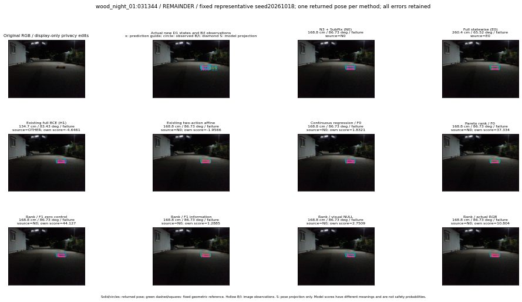

실선은 반환 자세, 초록 점선은 고정 기하 참조입니다. S는 영상 관측이 아닙니다. 점수는 모델별 의미가 다르며 보정된 안전 확률이 아닙니다. 개인정보 처리는 표시 사본에만 적용했습니다.
| 방법·seed | 위치 / 회전 / 공동성공 | 실제 출처 | 선택 후보 | 각 모델 자체 점수 |
|---|---|---|---|---|
| N0 | 168.8 cm / 86.73 deg / failure | N0 | N/A | N/A |
| E0 | 260.4 cm / 65.52 deg / failure | E0 | N/A | N/A |
| E0_REGENERATED | 260.4 cm / 65.52 deg / failure | E0 | E0_REGENERATED | N/A |
| POSEFIX_SUBPIX_PF_ANCHOR | 174 cm / 86.84 deg / failure | OTHER | N/A | N/A |
| POSEFIX_SUBPIX_YOLO_ANCHOR | 174 cm / 86.84 deg / failure | OTHER | N/A | N/A |
| D1_H1_MLP_s20261018 | 134.7 cm / 83.43 deg / failure | OTHER | WD0/ORIGINAL_WD/sample/1 | -4.646115303039551 |
| D1_H1_MLP_s20261019 | 134.7 cm / 83.43 deg / failure | OTHER | WD0/ORIGINAL_WD/sample/1 | -4.280209541320801 |
| D1_H1_MLP_s20261020 | 134.7 cm / 83.43 deg / failure | OTHER | WD0/ORIGINAL_WD/sample/1 | -5.110411643981934 |
| D1_H1_PAIR_MLP_s20261018 | 168.8 cm / 86.73 deg / failure | N0 | N0 | -3.540184259414673 |
| D1_H1_PAIR_MLP_s20261019 | 168.8 cm / 86.73 deg / failure | N0 | N0 | -3.0663135051727295 |
| D1_H1_PAIR_MLP_s20261020 | 168.8 cm / 86.73 deg / failure | N0 | N0 | -4.447543621063232 |
| D1_H1_PAIR_ROLE_AFFINE_s20261018 | 168.8 cm / 86.73 deg / failure | N0 | N0 | -1.9565743207931519 |
| D1_H1_PAIR_ROLE_AFFINE_s20261019 | 168.8 cm / 86.73 deg / failure | N0 | N0 | -2.3312318325042725 |
| D1_H1_PAIR_ROLE_AFFINE_s20261020 | 168.8 cm / 86.73 deg / failure | N0 | N0 | -2.08252215385437 |
| R_CONT_F0_s20261018 | 168.8 cm / 86.73 deg / failure | N0 | N0 | 1.8321179151535034 |
| R_CONT_F0_s20261019 | 168.8 cm / 86.73 deg / failure | N0 | N0 | 1.5258424282073975 |
| R_CONT_F0_s20261020 | 168.8 cm / 86.73 deg / failure | N0 | N0 | 1.5527575016021729 |
| R_ORDER_F0_s20261018 | 168.8 cm / 86.73 deg / failure | N0 | N0 | 37.33392333984375 |
| R_ORDER_F0_s20261019 | 168.8 cm / 86.73 deg / failure | N0 | N0 | 30.221067428588867 |
| R_ORDER_F0_s20261020 | 168.8 cm / 86.73 deg / failure | N0 | N0 | -23.2298583984375 |
| R_ORDER_F1_ZERO_s20261018 | 168.8 cm / 86.73 deg / failure | N0 | N0 | 44.126609802246094 |
| R_ORDER_F1_ZERO_s20261019 | 168.8 cm / 86.73 deg / failure | N0 | N0 | 55.688720703125 |
| R_ORDER_F1_ZERO_s20261020 | 168.8 cm / 86.73 deg / failure | N0 | N0 | 28.72689437866211 |
| R_ORDER_F1_s20261018 | 168.8 cm / 86.73 deg / failure | N0 | N0 | 1.2885198593139648 |
| R_ORDER_F1_s20261019 | 168.8 cm / 86.73 deg / failure | N0 | N0 | 7.953308582305908 |
| R_ORDER_F1_s20261020 | 168.8 cm / 86.73 deg / failure | N0 | N0 | 2.959502935409546 |
| V_ORDER_NULL_s20261018 | 168.8 cm / 86.73 deg / failure | N0 | N0 | 2.7508938312530518 |
| V_ORDER_NULL_s20261019 | 168.8 cm / 86.73 deg / failure | N0 | N0 | 3.052257537841797 |
| V_ORDER_NULL_s20261020 | 168.8 cm / 86.73 deg / failure | N0 | N0 | 12.985779762268066 |
| V_ORDER_RGB_s20261018 | 168.8 cm / 86.73 deg / failure | N0 | N0 | 10.804472923278809 |
| V_ORDER_RGB_s20261019 | 168.8 cm / 86.73 deg / failure | N0 | N0 | 3.310997724533081 |
| V_ORDER_RGB_s20261020 | 168.8 cm / 86.73 deg / failure | N0 | N0 | -0.5231546759605408 |